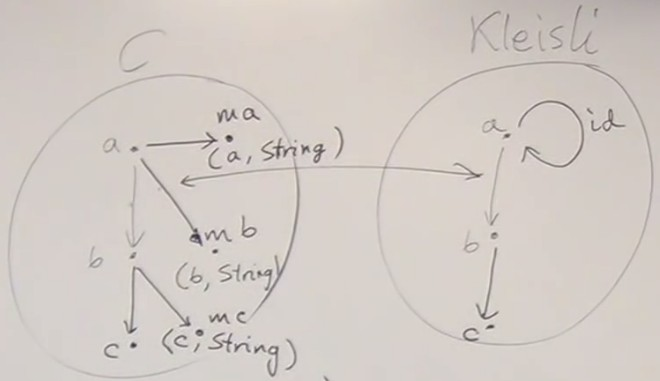
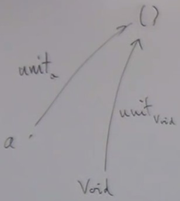
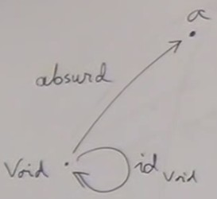
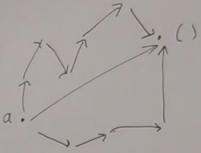
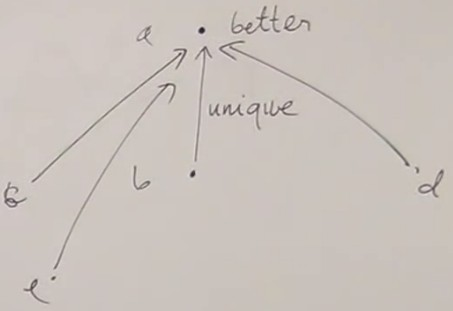

Recapitulation on Kleisli category
We start with a categoryC and based on this category we build an other category, the Kleisli category K.
In
K, the objects are the same as in C. However, the arrows in K are not the same as the arrows in C.
In
C, we have a mapping which, for every object, gives an other object.
We saw a particular case in which for every type
a, we assign to it a pair composed by a and a string. a → (a, string).
We make a mapping of types - from type a to type
(a, string) - let's call it ma ; we'll see later that this kind of mapping is a functor.
In
C, the arrow from a to mb (the embellished arrow) becomes the arrow from a to b in K.
In a way, we implement an arrow in
K in terms of an arrow in C.

For K to be a category, we need :
-
Composition ; this is not obvious.
InC, the arrow fromatomband the arrow frombtomcdo not compose (the end of the first is different from the begining of the second).
We saw that in this particular case, they compose : first we use the arrow fromatomb, and we get the pair(b, string); from this pair we takeband use the arrow frombtomc, and we get the pair(c, string); and we combine this by concatenating the two strings to return a pair(c, string1 + string2).
This was possible because concatenation composes, but this is not generally true.
To have composition inK, we must be able to find a way to define composition in the implementation. -
Identity : we built that defining an arrow from
atoma, which has to be a unit in the new composition we build.
This was achieved using an empty string. - Associativity ; this was possible because string concatenation is associative.
K is a category.
And the mapping
m is called a monad ; this is one of the many definition of a monad.
Universal construction
So we talked about sets, with two views : the categorySet, and set theory.
In set theory, sets are things that have elements ; using the elements, we can define things like functions ; we have empty set, singleton set.
And then in category Set, we become amnesic, we don't know anymore that sets contain elements. Wa can only talk about arrows. These arrows come from functions in set theory. Every time we have a function between two sets, we have an arrow in the category.
And we know how to compose functions (the result of a function is the argument of an other function). We use the way functions compose in set theory to determine how arrows compose in our Set category. In the category, we don't know why the arrows compose this way, this knowledge comes from set theory.
But then how can we define things that we know from set theory ? Empty set, singleton set, cartesian product ? All these notions are defined in terms of elements. We have to rediscover all this using only arrows and their composition, nothing else.
There is a very general method of defining things called universal construction.
In category theory, we use universal construction to construct a particular kind of object, or a particular kind of arrow, or a particular kind of pattern that we knew in set theory.
As we can't look inside an object, the only thing we can do is define the properties of an object in terms of relations of this object to every other object of the category. These relations are the arrows incoming to this object or outgoing from this object. We have to think about the whole universe.
That's what we did when we talked about epimorphisms and automorphisms.
The general method of universal construction is like googling something : you define a pattern, a combination of objects and arrows. It could be a simple pattern, like one object, or an object and an arrow to an other object.
So you say "here is my pattern, google in this category and show me your hits, everything that matches this pattern". In general we get a lot of results, often an infinity.
So it's not good enough, we need to rank these results. If we have two hits matching the same pattern, we need to be able to say which one is better than the other. Maybe not all objects are comparable, and this does not guarantee that one object is at the top. But if there is one, then we know that it is the object we were looking for.
Terminal object
We place ourselves in theSet category and try to find the universal property for the singleton set.
Singleton set is also called a unit and noted ().
How does this set relate to other sets ?
One interesting property is that it has an incoming arrow coming from every other object in the category. A polymorphic function which ignores its argument and returns a unit. There is even a function from the empty set (
void).

Unfortunately, this property is not limited to empty set. In fact there are arrows from every set to every other set, except for one case : there is no arrow from a non-empty set to empty set.
For example, there are at least two functions between a set and a two-element set (type
bool) : functions that we can call true and false, which ignore the arguments and return true or false.
The difference is that for singleton set, there is only one incoming arrow, a unique arrow from any other set to unit.
Here is an universal property that defines the singleton set.
But this construction involves only arrows, we can forget about sets and apply it to any other category.
We call the object defined this way a terminal object.
In every category, we can try to define a terminal object : this is an object that has a unique arrow coming from any other object.
We'll see that not every category has a terminal object.
There are two separate conditions :
-
For all object
a, there exists anfthat goes from a to the terminal object.∀ a ∃ f :: a → () -
For every two functions
fandgfrom a to the terminal object,fandgmust be equal.∀ f :: a → (), g :: a → () ⇒ f = gThat's the way to define uniqueness in mathematics : what if I have two things that satisfy a condition ? They have to be equal, so I only have one of them.
Example in an order
What does a teminal object mean ? Having an arrow from any other object means that the object is less than or equal any other object. So the terminal object must be the largest object.Obviously we see that some categories don't have a largest object, for example there is no largest natural number.
Initial object
We can try to define an empty set, or see what it happens if we invert the arrows of the terminal object. In fact, this is the same question.An empty set can be defined by outgoing arrows.
We call void empty set.
There is a function going from void to any other type, a tricky function called absurd() : I say that I have this function, try calling it ; give me an element of void and I'll give you an element of a. Since you can't give me an element of void, you can't prove that this function does not exist.  Here we have reversed the definition used for the terminal object.
The initial object is an object that has a unique outgoing arrow to every other object.
In the set category, it corresponds to an empty set.
The definition is similar to terminal object's definition :
-
For all object
a, there exists anfthat goes from the initial object toa.∀ a ∃ f :: void → a -
For every two functions
fandgfrom the initial object toa,fandgmust be equal∀ f :: void → a, g :: void → a ⇒ f = g
Unique path
In any category that has a terminal object, any path that goes from an object to the terminal object can be replaced by a single arrow.  And it's always the same arrow, that's where uniqueness come from : any path can be shrunk to the same unique arrow.If instead of having void we had the boolean set (two-element set), we would have at least two paths from any object,the true path and the false path.
And the same is true with initial object if we reverse.
Uniqueness
The next question we might ask is "how many of these objects are there ?"Intuitively we can say that there is only one empty set, but for the singleton set, this is not obvious : is the set containg one orange equal to the set containing one apple ? It raises the question of the meaning of equality of two objects. We don't know. It is not part of our thinking about categories. There is no equality of objects. There is equality of arrows. If we have two arrows with the same end and beginning, we can ask the question of their equality. But for objects, equality is not defined.
Instead we can aks the question "Are they isomorphic ?". Isomorphism is weel defined in every category (if you have two arrows between the objects, one being the invert of the other).
Terminal and initial objects are unique up to an isomorphism. The proofs are almost the same, except inverting the arrows.
A stronger condition is may be that there is a unique isomorphism between two terminal or two initial objects.
For example, if we have a set containing true and false, and a set containing black and white, there are two isomorphisms :
One associates black to true and white to false ; one associates white to true and black to false.
Proof for terminal object
Suppose we have two terminal objects a and b. Just apply the definition :a is a terminal object so there is a unique arrow from any object to a.
In particular, there will be an arrow from
b to a (let's call it g).
But
b is also a terminal object, so there is a unique arrow from a to b (let's call it f).
Let's call h = g o f ; it goes from
a to b and back to a, so it's a loop from a to a.
But
a is a terminal object, so there is a unique arrow from a to a.
And we know that there is always an identity for any object, so
h = Id.
So whe have g o f = Ida, so f and g are isomorphic.
Similarily f o g = Idb
And it's a unique isomorphism because
f and g are unique (by definition of terminal object).
Back to universal constructions
This illustrates universal construction. Here the pattern to pick is the simplest possible pattern, an object.Show me all the examples of this pattern in your category ; these are all the objects of the category.
The query is very imprecise, but we have the ranking. We say that a is better than b if there is a unique arrow from b to a.
Many objects have multiple arrows incomping to them, so they don't compare, the ranking is not a total order.  So the terminal object is better than any other object.
The difference between terminal and initial objects lies only in ranking. The query is the same ("an object"). To rank the initial object we would say that
a is better than b if there is an arrow from a to b.